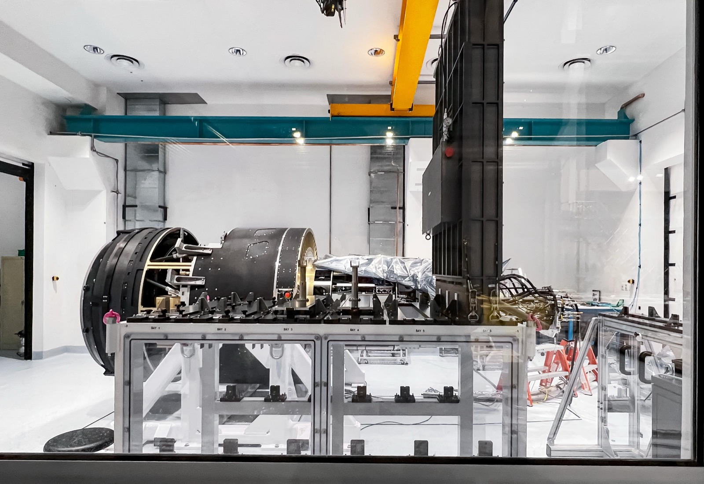

Executive Summary
2026년 여름, 베라 C. 루빈 천문대가 LSST(Legacy Survey of Space and Time, 시공간 유산 탐사) 관측을 본격화하면서 천문학의 오래된 병목이 자리를 옮겼다. 지난 400년간 발견의 한계는 "얼마나 큰 거울로 얼마나 어두운 빛을 모으는가"였다. 이제 8.4m 주경과 3,200메가픽셀 카메라가 40초마다 보름달 40배 넓이의 하늘을 찍어내면서, 한계는 광학이 아니라 매일 밤 쏟아지는 수백만에서 천만 건에 이르는 변화 알림(alert) 가운데 무엇을 믿고 골라 사람이 들여다볼 것인가로 옮겨 갔다. 이 글은 그 병목이 어떻게 망원경에서 실시간 분류 파이프라인으로 이동했는지를 본다.
수치가 그 이동을 증명한다. LSST급 서베이가 방출하는 알림은 연간 최대 10억 건 규모인데, 이를 사람이 확인하는 마지막 관문인 전 세계 분광 후속관측 용량은 연 1만에서 10만 건에 그친다. 네다섯 자릿수의 격차다. 실제로 LSST 초신성 중 분광으로 확인되는 비율은 1%에도 못 미친다. 나머지 절대다수는 어떤 사람의 눈에도 닿지 않은 채 분류기의 확률 점수만으로 우선순위가 매겨진다. 분류기가 곧 발견의 문지기가 된 것이다.
그런데 분류기가 내리는 판정의 신뢰도는 결국 그것이 학습한 라벨의 품질에서 나온다. 데이터가 사람의 검수 용량을 구조적으로 초과할 때, AI-Ready란 단순히 "학습 가능한 데이터"가 아니라 "신뢰하고 우선순위를 매겨 골라낼 수 있게 만든 데이터"를 뜻한다. 루빈은 이 명제를 천문학이라는 극한 스케일에서 실증하는 참조 사례다.
편집자의 노트. 데이터가 사람의 검수 용량을 넘어서는 지점, 그리고 그때 무엇을 믿고 골라낼지의 문제라면 페블러스는 늘 관심이 간다. 이 글은 루빈이 "얼마나 놀라운가"를 늘어놓지 않는다. 하나의 빛 변화가 알림이 되고, 필터를 지나, 분류되고, 끝내 사람의 검수 후보로 걸러지기까지의 자동 관문을 단계별로 분리해 본다. 신생 시설인 만큼 수치는 시점에 따라 갈린다. 알림량처럼 공식 소스끼리도 값이 다른 경우는 성격(발표 목표치·기술 사양·가동 초기 실측)을 구분해 병기했다.
주요 수치
네 숫자가 이 글의 뼈대다. 앞의 둘은 "쏟아지는 양"과 "사람이 확인할 수 있는 양"의 격차를, 뒤의 둘은 그 격차를 기계가 어디까지 메우고 있는지를 보여준다.
연 10억 건
방출되는 알림 규모
LSST급 서베이가 쏟아내는 연간 변화 알림
연 1만~10만
분광 검수 상한
전 세계 분광 후속관측 = 인간 확인의 한계
1% 미만
초신성 분광 확인율
나머지는 분류기의 확률 점수에만 의존
1/80 → 45%
브로커 처리율 스케일업
ALeRCE가 LSST 요구 처리율에 도달한 수준
병목이 이동했다 — 망원경에서 분류기로
천문학이 발전한다는 말은 오랫동안 거울이 커진다는 뜻이었다. 갈릴레오의 손바닥만 한 렌즈에서 팔로마의 5m 거울까지, 더 어두운 빛을 더 많이 모으는 쪽으로 경쟁이 이어졌다. 루빈 천문대의 8.4m 주경도 그 계보 위에 있다. 그러나 루빈이 바꾼 것은 거울의 크기가 아니라 관측의 리듬이다. 3,200메가픽셀, 세계 최대의 디지털 카메라가 40초마다 새 하늘을 찍는다. 한 장의 시야는 9.6제곱도, 보름달 면적의 40배가 넘는다. 밤새 이 동작을 반복하면 약 1,000장의 이미지와 10TB 안팎의 데이터가 쌓인다.

문제는 그다음이다. 이미지를 찍는 것과 그 안에서 "무엇이 달라졌는가"를 골라내는 것은 다른 일이다. 루빈은 이전 관측과 비교해 밝기나 위치가 변한 천체를 감지할 때마다 알림(alert)을 만든다. 알림은 그 천체의 좌표, 밝기 변화, 과거 이력을 담은 작은 데이터 패킷이다. 이 알림이 하룻밤에 몇 건이나 나오는가 하는 물음에는, 공교롭게도 공식 소스끼리도 답이 갈린다. 루빈의 보도자료는 "밤당 최대 700만 건"이라 밝혔고, 같은 관측소의 기술 레퍼런스 페이지는 "약 1,000만 건"을 적어 두었다. 그리고 실제 첫 알림이 나간 2026년 2월 24일 밤에는 약 80만 건이 생성됐다.
세 숫자는 모순이 아니라 시제의 차이다. 80만은 가동 초기의 실측값이고, 700만은 정상 운영 궤도에서의 발표 목표치이며, 1,000만은 설계·기술 사양이 상정하는 상한에 가깝다. 지금 루빈은 램프업 단계에 있어 "이미 확립된 통계"로 못 박기 어렵다. 다만 규모의 자릿수는 분명하다. 전신 격인 ZTF(Zwicky Transient Facility)가 밤당 수십만 건을 다뤘던 것과 비교하면 대략 한 자릿수, 열 배가량 큰 스트림이 열린 것이다.
규모 자체는 그저 큰 숫자일 뿐이다. 병목이 이동했다고 말할 수 있는 근거는 그 알림을 사람이 확인하는 마지막 관문의 용량과 나란히 놓을 때 드러난다. 새 천체의 정체를 확정하는 가장 신뢰도 높은 방법은 빛을 파장별로 쪼개 보는 분광 관측인데, 이 자원은 전 세계를 통틀어도 연 1만에서 10만 건 규모다. LSST급 서베이가 방출하는 알림은 연간 최대 10억 건. 두 수를 같은 축에 얹어 보면 그 격차가 눈에 들어온다.
연간 알림량 vs 분광 검수 용량 (로그 스케일)
▲ 막대는 로그 스케일이다. 선형으로 그리면 아래 막대는 화면에 보이지 않을 만큼 짧다. 알림과 검수 용량 사이에는 네다섯 자릿수의 격차가 있고, 그마저 LSST 초신성 기준으로는 1% 미만만 분광 확인에 닿는다. | 출처: arXiv:2512.15555, LSST SNe 추정 논문
망원경은 이미 충분히 크다. 오늘의 승부처는 더 큰 거울이 아니라, 사람이 결코 다 볼 수 없는 알림의 홍수 속에서 무엇을 믿고 골라 볼 것인가라는 분류 문제다. 그 판정을 매일 밤 수백만 번씩 자동으로 내리는 것이 실시간 분류 파이프라인이다.
하나의 알림이 사람에게 닿기까지
하나의 빛 변화가 과학이 되기까지는 여러 개의 자동 관문을 통과해야 한다. 중요한 것은 이 관문들이 사람이 검토하기 전에, 초 단위로, 자동으로 열리고 닫힌다는 점이다. 인간의 개입은 언제나 사후적이다. 촬영에서 사람의 검수 후보로 걸러지기까지, 그 경로를 단계별로 따라가 보자.
2.1차분 이미징 — "달라진 픽셀"만 남긴다
밤하늘 대부분은 어젯밤과 똑같다. 그래서 파이프라인의 첫 일은 변한 것만 남기는 것이다. 차분 이미징(difference imaging)은 방금 찍은 이미지에서 같은 하늘의 기준 이미지를 빼, 밝아지거나 어두워지거나 움직인 픽셀만 도드라지게 만든다. 초신성처럼 새로 켜진 빛, 소행성처럼 자리를 옮긴 점이 이 빼기에서 살아남는다. 남은 신호마다 그 자리를 잘라낸 작은 이미지 조각(stamp)이 만들어진다.
2.2알림 패킷 — 표준 포맷으로 세계에 방출
살아남은 신호는 알림 패킷으로 포장된다. 루빈은 Avro라는 표준 직렬화 포맷을 쓴다. 하나의 패킷에는 천체의 좌표, 이번 측정의 밝기, 그리고 과거 관측 이력이 함께 담긴다. 과거 이력이 붙는다는 점이 중요하다. 시간에 따른 밝기 변화, 곧 광도곡선(light curve)을 뒤쪽 분류기가 곧바로 쓸 수 있게 하기 때문이다. 패킷은 촬영 후 수십 초에서 2분 이내에 생성돼 누구나 구독할 수 있는 스트림으로 방출된다.
2.3real-bogus — 진짜와 가짜를 가르는 첫 문지기
차분 이미징에서 살아남은 신호가 전부 진짜 천체는 아니다. 우주선 입자가 센서에 남긴 흔적, 광학계의 결함, 두 이미지를 겹칠 때의 미세한 정합 오차가 모두 "변화"처럼 보인다. 이 가짜(bogus)를 진짜(real)와 갈라내는 것이 real-bogus 분류기, 이미지 조각을 입력받는 CNN(합성곱 신경망)이다. ZTF 시대의 대표 모델 braai는 이 일에서 최신 수준의 낮은 오탐·오검 성능을 보고했다. 다만 이 필터는 한 번 정해 두고 잊는 장치가 아니다. 후속 모델인 BTSbot은 밝은 은하핵을 초신성으로 잘못 짚는 오탐을 줄이려 판정 임계값을 0.3에서 0.7로 올렸다. 이 임계값을 어디에 두느냐가 곧 어떤 신호가 발견 후보로 살아남는가를 결정한다.
촬영에서 브로커 재배포까지, 이 사슬 전체가 사람의 손을 거치지 않고 초 단위로 돌아간다. 매일 밤 알림의 절대다수는 어떤 사람의 눈에도 닿지 않은 채 기계의 확률 점수만으로 순위가 매겨진다. 그래서 파이프라인의 판정 경계는 단순한 기술 파라미터가 아니라, 무엇이 관측될 기회를 얻는가를 가르는 과학적 선택이 된다.
일곱 개의 눈 — 커뮤니티 브로커는 무엇을 골라내나
루빈은 알림을 분류하지 않는다. 스트림을 방출만 하고, 그 판정은 외부의 커뮤니티 브로커(community broker)에 맡긴다. 브로커란 루빈의 알림 스트림을 통째로 받아 자기 방식으로 걸러내고 분류해 다시 배포하는 독립 시스템이다. 왜 천문대가 직접 하지 않을까. 답은 스케일과 다양성이다. 밤당 수백만에서 천만 건을 실시간으로 처리하려면 만만치 않은 컴퓨팅 인프라가 필요하고, "무엇이 흥미로운 신호인가"의 기준은 초신성을 쫓는 팀과 소행성을 쫓는 팀이 서로 다르다. 하나의 중앙 분류기로는 이 다양성을 감당할 수 없다.
그래서 루빈은 일곱 개의 공식 커뮤니티 브로커를 선정해 전체 스트림 접근권을 부여했다. 각 브로커는 서로 다른 나라의 연구 그룹이 운영하며, 저마다의 분류·필터 전략과 사용자층을 갖는다. 그 지형을 한 표로 정리하면 이렇다. 다만 세부 아키텍처와 성능 수치가 1차 소스로 안정적으로 확인되는 곳은 대표 사례인 ALeRCE 정도이며, 나머지는 운영 주체와 지향을 개괄 수준에서 정리했다.
| 브로커 | 운영 주체 · 지역 | 지향 |
|---|---|---|
| ALeRCE | 칠레 연구 컨소시엄 | 2단 분류(이미지 조각 CNN + 광도곡선 분류기), 15개 클래스에 확률 부여 |
| ANTARES | 미국 NOIRLab | 필터 기반 실시간 선별, 관심 이벤트 스트림 제공 |
| Fink | 프랑스 (IN2P3/CNRS) | 대규모 분산 처리 기반 분류·과학 모듈 |
| Lasair | 영국 (에든버러·QUB) | 쿼리·필터 중심의 커뮤니티 탐색 인터페이스 |
| AMPEL | 독일 (DESY 등) | 재현 가능한 분석 워크플로·프로비넌스 강조 |
| Babamul | 미국 중심 | 신규 브로커, 대용량 스트림 대응 지향 |
| Pitt-Google | 미국 (피츠버그대 · Google Cloud) | 상용 클라우드 인프라 위에서 스트림 처리·재배포 |
▲ 루빈 공식 커뮤니티 브로커 7종 개괄. 운영 주체·지역은 공개 정보 기준이며, 세부 아키텍처는 브로커마다 다르고 계속 진화한다. | 출처: 각 브로커 공식 문서, ALeRCE 논문(arXiv:2008.03311)
3.1대표 사례 ALeRCE — 두 단계로 나눠 본다
ALeRCE는 분류를 두 단계로 나눈다. 먼저 알림에 담긴 이미지 조각(stamp)을 CNN이 훑어 빠른 1차 판정을 내린다. 갓 도착한 신호가 초신성 후보인지, 소행성인지, 변광성인지를 이미지만으로 우선 가른다. 그다음 시간이 쌓여 광도곡선이 길어지면, 밝기 변화의 통계적 특징을 뽑아 GBDT(그래디언트 부스팅 결정트리)·랜덤 포레스트 계열 분류기가 15개 클래스에 확률 점수를 매긴다. 이미지가 즉각성을, 광도곡선이 정밀함을 맡는 역할 분담이다.
중요한 것은 규모의 현실이다. ALeRCE가 ZTF 스트림을 처리하던 시절의 속도는 초당 약 5건, 밤당 약 14만 건이었다. 그런데 LSST가 요구하는 처리율은 초당 약 116건(밤 1,000만 건 가정)에 이른다. ZTF 시대의 처리 속도는 그 요구치의 약 80분의 1에 불과했던 셈이다. 최신 파이프라인 테스트에서는 초당 약 150건, 요구치의 45% 수준까지 끌어올렸다. 브로커 인프라가 아직 LSST 규모를 온전히 따라잡지 못했고, 지금도 스케일업 중이라는 사실을 이 숫자가 정직하게 보여준다.
일곱 개의 브로커는 같은 스트림을 받아 서로 다른 눈으로 본다. 이 다양성이 강점이지만, 대표 브로커조차 요구 처리율의 절반 남짓에 머물러 있다는 사실은 "실전 스케일업은 아직 따라가는 중"이라는 현실을 드러낸다. 이는 대규모 데이터 파이프라인을 실제로 돌려 본 실무자라면 낯설지 않은 풍경이다.
분류기는 무엇을 학습했나 — 라벨과 신뢰의 문제
분류기는 정답을 아는 것이 아니라 배운 것을 흉내 낸다. 그래서 매일 밤 내리는 판정의 신뢰도는 결국 그것이 학습한 라벨의 품질에서 나온다. 그런데 천문학의 라벨은 유난히 얻기 어렵다. 어떤 천체가 정말 Ia형 초신성인지 확정하려면 분광 관측이 필요한데, 앞서 봤듯 그 자원이 극도로 희소하다. 그래서 LSST 분류기들은 세 가지 출처의 라벨에 의존한다. 과거 서베이의 기록, 물리 모델로 만든 시뮬레이션, 그리고 밝은 소수에 한정된 분광 확인이다.
세 출처 모두 편향을 안고 있다. 특히 분광 확인 라벨의 편향은 구체적이다. ZTF의 Bright Transient Survey는 6년간 8,800건이 넘는 초신성을 분광으로 확인했지만, 이는 r등급 약 18.5보다 밝은 후보에 한정된다. 어두운 절대다수는 분광 라벨을 얻지 못한 채 광도곡선 기반 분류기의 확률 점수에만 의존한다. 결국 모델은 "밝아서 확인하기 쉬웠던" 천체들을 정답으로 배우고, 어두운 세계는 추정으로 메운다.
4.1PLAsTiCC — 라벨 불균형을 정면으로 드러낸 벤치마크
이 문제를 실증적으로 축소해 보여준 것이 PLAsTiCC(Photometric LSST Astronomical Time-Series Classification Challenge)다. 2018년 캐글에서 열린 이 대회는 LSST가 마주할 데이터를 미리 시뮬레이션해, 1,000팀 이상이 참가했다. 훈련셋은 광도곡선 7,848개, 14개 클래스로 구성됐는데, 그 클래스 비중이 극단적으로 치우쳐 있었다. 가장 흔한 Ia형 초신성이 전체의 약 29.5%인 반면, 가장 희소한 M-dwarf 플레어는 0.4%, 객체 수로는 단 30개뿐이었다. 이 치우침은 최다·최소 두 클래스만 견줘도 대번에 드러난다.
PLAsTiCC 훈련셋 클래스 비중 (최대 vs 최소)
▲ 가장 흔한 클래스와 가장 희소한 클래스 사이에 약 70배의 비중 차이가 있다. 희소 클래스는 배울 예시가 절대적으로 부족해 분류기 내부 표현이 다수 클래스로 쏠린다. | 출처: PLAsTiCC 결과 논문(arXiv:2012.12392)
이 불균형은 실수가 아니라 설계였다. PLAsTiCC는 LSST 실제 스트림에서도 그대로 재현될, 비대표(non-representative) 훈련셋과 극단적 클래스 불균형을 일부러 담았다. 대회는 클래스마다 동등한 가중치를 주는 손실 함수(weighted multi-class log-loss)로 희소 클래스를 무시하지 못하게 했고, 참가자들은 데이터 증강과 의사라벨(pseudo-label) 같은 기법으로 맞섰다. 그러나 근본 문제는 남는다. 희소한 클래스, 어두운 천체, 처음 보는 현상은 배울 예시 자체가 부족하다.
4.2확률 점수를 어떻게 믿을 것인가
분류기의 출력은 "이것은 초신성이다"라는 단정이 아니라 "초신성일 확률 0.87"이라는 점수다. 이 신뢰도 점수가 다운스트림으로 어떻게 전달되느냐가 실전에서 중요해진다. 후속관측을 결정하는 팀은 이 점수를 보고 한정된 망원경 시간을 어디에 쓸지 정한다. 점수가 과신되면 잘못된 후보에 자원을 낭비하고, 과소평가되면 진짜 발견을 놓친다. 라벨이 편향된 데이터로 학습한 모델의 확률 점수는 그 편향을 고스란히 물려받는다. "밝은 초신성"에는 자신 있게, "어두운 희귀 현상"에는 흔들리며 답하는 것이다.
여기서 한 걸음 더 들어가면, 점수가 얼마인가보다 그 점수를 얼마나 믿어도 되는가가 문제가 된다. 잘 보정된(calibrated) 분류기라면 "확률 0.87"이라고 말한 후보 100개 가운데 실제로 87개 안팎이 초신성이어야 한다. 그런데 희소 클래스와 어두운 천체가 학습에서 과소 대표되면, 모델은 자주 본 밝은 초신성에는 실제보다 부풀려진 확신을, 드물게 본 현상에는 근거가 얕은 자신감이나 과도한 주저를 보이기 쉽다. 그래서 후속관측 팀에 필요한 것은 확률 점수 하나가 아니라, 그 점수가 어느 영역에서 믿을 만하고 어디서 흔들리는지까지 함께 붙은 정보다. 신뢰도가 어디까지 유효한지를 추적하지 못한 라벨은, 아무리 점수가 정교해 보여도, 어디서 틀릴지 모르는 채로 귀한 망원경 시간을 배분하게 만든다.
라벨 품질이 곧 발견 품질이다. 분광 확인이 밝은 소수에 편중되고 클래스가 극단적으로 불균형한 조건에서, 분류기가 무엇을 자신 있게 골라내고 무엇을 놓치는지는 데이터의 편향이 미리 정해 둔다. 더 큰 모델이 아니라 더 나은 라벨이 이 문제의 해법에 가깝다.
사람이 다 볼 수 없을 때 — AI-Ready란 무엇인가
여기까지의 이야기는 하나의 조건으로 수렴한다. 데이터가 사람의 검수 용량을 구조적으로 초과한다는 것. 알림은 연 10억 건 규모로 쏟아지는데 분광 확인은 연 1만에서 10만 건, 초신성 기준으로는 1%에도 못 미친다. 이 조건에서 트리아지(triage), 곧 무엇을 먼저 볼지 골라내는 일은 선택이 아니라 구조적 필연이다. 사람이 모든 알림을 검토하겠다는 것은 애초에 불가능한 계획이다.

5.1"무엇을 볼지 고르는 일"이 곧 과학이 된다
그래서 발견의 성격이 바뀐다. 예전에는 하늘을 오래 들여다보는 일이 발견이었다면, 이제는 기계가 쏟아낸 후보 중 무엇에 귀한 관측 자원을 쓸지 고르는 일이 발견의 첫 단계가 된다. 이 선택을 최적화하려는 시도가 액티브 러닝(active learning)이다. 어떤 천체를 분광 확인하면 분류기 전체의 성능이 가장 크게 오를지를 계산해, 한정된 후속관측을 그곳에 배분하는 접근이다. RESSPECT 같은 프로젝트가 이 방향을 탐색해 왔다. 요점은 분명하다. 검수 용량이 고정돼 있을 때, 경쟁력은 "무엇을 골라 검수하느냐"의 품질에서 나온다.
한국도 이 데이터에 접속해 있다. 한국천문연구원(KASI)이 2025년 하반기 NSF·DOE와 현물기여(In-kind Contribution) 협약을 맺어 국내 유일의 LSST 자료 접근권을 확보했고, "Korean Rubin Science Collaboration"을 운영한다. 국내 연구 커뮤니티가 이 알림 스트림과 분류 문제에 직접 참여할 통로가 열려 있다는 뜻이다.
5.2천문학만의 이야기가 아니다
"데이터가 사람의 검수 용량을 초과하는" 조건은 별을 세는 곳에서만 벌어지지 않는다. 제조 라인의 품질검사는 모든 제품을 사람이 볼 수 없어 불량 검출 모델의 판정에 의존하고, 자율주행은 무한히 쏟아지는 주행 로그 중 어떤 코너케이스를 라벨링해 학습에 넣을지 골라야 하며, 의료 영상 판독은 판독의가 볼 수 있는 건수가 정해져 있다. 어느 현장이든 질문은 같다. 모든 것을 볼 수 없을 때, 무엇을 먼저 믿고 검수할 것인가. 루빈의 real-bogus 필터에서 브로커 분류를 거쳐 분광 트리아지에 이르는 사슬은 이 질문을 극한까지 밀어붙인 참조 아키텍처다. 브로커 인프라가 아직 요구치의 절반 남짓이라는 현실까지 포함해, 실무 독자에게 곧바로 유추 가능한 렌즈를 제공한다.
5.3그렇다면 AI-Ready란 무엇인가
이 글이 처음 던진 질문으로 돌아가자. 데이터가 검수 용량을 초과하는 시대에 AI-Ready란 무엇을 뜻하는가. 루빈의 사례는 그 답이 "학습이 가능한 데이터"에 머물지 않음을 보여준다. real-bogus 필터가 무엇을 걸러내고, 브로커가 어떤 확률로 분류하며, 분광 트리아지가 무엇을 먼저 확인할지는 모두 라벨의 출처와 편향, 그리고 그 신뢰도를 어떻게 추적하느냐에 달려 있다. 즉 AI-Ready란 검수 용량을 초과하는 규모에서도 신뢰하고 우선순위를 매겨 골라낼 수 있게 만든 데이터다. 라벨이 어디서 왔고, 무엇을 못 보고 있으며, 그 확률 점수를 어디까지 믿어도 되는지를 아는 상태. 발견의 신뢰가 더 큰 망원경이 아니라 더 나은 데이터에서 온다는 명제를, 루빈은 매일 밤 실증하고 있다.
편집자의 노트. 페블러스가 다루는 문제가 바로 이 층위다. 데이터셋의 라벨 품질과 신뢰도를 진단하고, 검수 용량을 초과하는 스케일에서 무엇을 먼저 봐야 하는지를 데이터 레벨에서 짚어 내는 일. 루빈의 real-bogus·브로커·트리아지 사슬은 그 문제를 천문학이라는 극단에서 보여주는 참조 사례이고, GeoVision(위성영상)·Artemis(우주 운영)에 이어 "관측 데이터 → 실시간 ML 분류 → 인간 검수 병목"이라는 축을 하나 더 더한다. 이 글은 그 축을 소개하되, 결론은 독자의 현장에 남겨 둔다.
참고문헌
이 글이 인용한 루빈/LSST 공식 1차 소스, 실시간 분류·브로커·라벨 품질에 관한 학술 논문, 그리고 관련 통계 자료를 출처별로 묶었다. 신생 시설 특성상 소스마다 값이 갈리는 수치(알림량·지연시간 등)는 본문에서 성격을 구분해 병기했다.
공식 · 1차 소스
- 1.Vera C. Rubin Observatory (2026). Rubin Observatory Issues First Alerts (보도자료, "밤당 최대 700만 건").
- 2.Vera C. Rubin Observatory. Key Numbers (기술 레퍼런스, "알림 ~1,000만 건/야", "10 TB/night", "60초").
- 3.U.S. National Science Foundation (2026). NSF–DOE Vera C. Rubin Observatory begins capturing the cosmos.
학술 — 파이프라인 · 분류 · 브로커
- 4.Jurić, M., Kantor, J., et al. (2015). The LSST Data Management System. arXiv:1512.07914 (알림량·데이터량 설계 스펙).
- 5.Patterson, M. T., et al. (2019). The Zwicky Transient Facility Alert Distribution System. arXiv:1902.02227.
- 6.Duev, D. A., et al. (2019). Real-bogus classification for the Zwicky Transient Facility using deep learning (braai). arXiv:1907.11259 · MNRAS 489, 3582.
- 7.Sánchez-Sáez, P., et al. (2021). Alert Classification for the ALeRCE Broker System: The Light Curve Classifier. arXiv:2008.03311 · AJ 161, 141 (15개 클래스).
학술 — 라벨 품질 · 검수 용량
- 8.The PLAsTiCC team; Hložek, R., et al. (2020). Results of the Photometric LSST Astronomical Time-Series Classification Challenge (PLAsTiCC). arXiv:2012.12392 (14클래스, 0.3~30% 불균형).
- 9.Melo, A., Sanchez-Saez, P., Ivanov, V. D., et al. (2025). Spectroscopic Alerts for the Time-Domain Era. arXiv:2512.15555 (연 10억 알림 vs 연 1만~10만 분광, over-subscription).
한국 · 생태계
- 10.한국천문연구원(KASI) (2025). NSF·DOE와 In-kind Contribution 협약 — 국내 LSST 자료 접근권 확보 (보도자료, Korean Rubin Science Collaboration).
※ 모든 arXiv 식별자·저자·연도는 원문 대조로 검증됨 (참고문헌 정본: references.json).